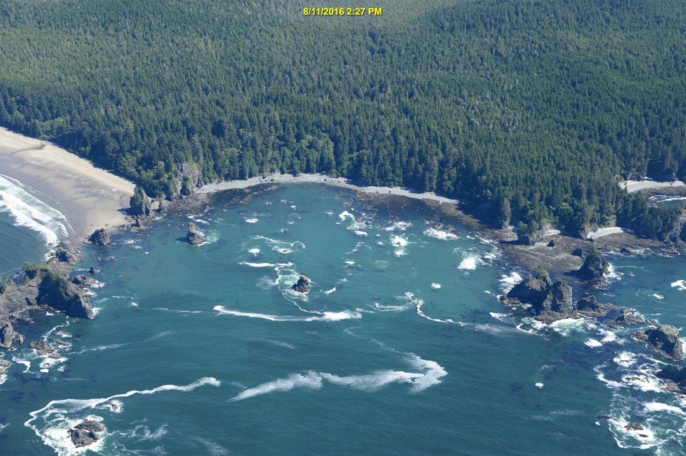
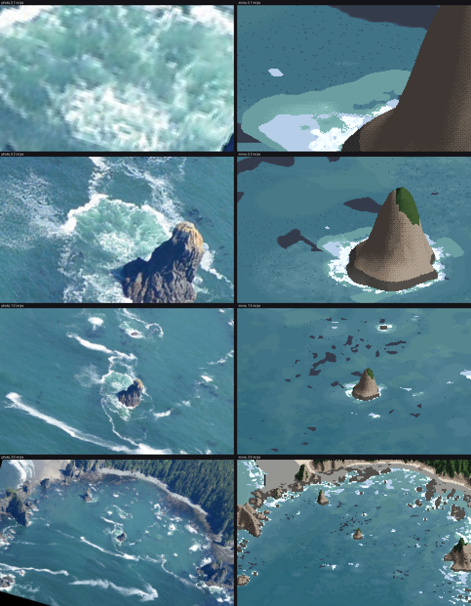

1. The answer key: a photo registered onto the sea floor
What it's for. An answer key is a photo seen through your camera at your pixel size. With one, "does it look like the sea?" becomes a set of photo | mine pairs you can diff. It also lets you measure what the photo's sea colour is doing per metre of depth, which no single photo can tell you on its own. It took me about an hour and it underpinned everything after.
Code: code/reg.py, code/dem.py, code/measure_poa.py, photo_view in code/stage1.py, photo_at in code/lockstep.py, code/sample.py.
Step 1. Find the richest pair: a low oblique and a lidar that goes under the water
WA Ecology flies the whole marine shoreline at about 45° down, from low altitude. 253 frames for the Olympic coast sit in voxsim-data/places/olycoast/obliques, at 4200×2800, from 1970, 2000/2006 and 2016. I made contact sheets of all the 2016 frames (contact.py) and chose Point of the Arches (frame 060819_15405, 11 Aug 2016, 14:27). It is a rocky cove with two sea stacks, reef heads, drifting foam streaks and kelp, all in one frame, in sun.

060819_15405, downsampled for viewing. The sea is a single plane; the stacks and cliffs are not.
The olycoast pack's 1 m elevation is topo-bathymetric: it reaches about 27 m below the surface. So the reefs under the photo's water are known to a metre. dem.window mosaics the 1000×1000 float32 tiles (zstd, NaN nodata, EPSG:26910):
def window(place, layer, x0, y0, x1, y1, dtype=np.float32):
"""Mosaic [x0,x1) x [y0,y1) in UTM metres; returns array with row 0 = north (y1)."""
x0, y0, x1, y1 = int(round(x0)), int(round(y0)), int(round(x1)), int(round(y1))
...
sub = t[int(oy + 1000 - ay1):int(oy + 1000 - ay0), int(ax0 - ox):int(ax1 - ox)]
(My first version didn't round the window to integers and crashed with a 783×453 → 784×452 broadcast error.)
I also wrote down the conditions at the photo's hour, because every later comparison needs them. NDBC 46087 (Neah Bay) had Hs 1.57 m, Tp 8.3 s from 277–286°, and wind 1–3.5 m/s. The La Push tide gauge read 0.40–0.45 m NAVD88, a low tide. That tide is the sea level: depth = 0.45 − z.
Step 2. A homography, because the sea is a plane
Every point on the water surface lies on one plane, so the photo-to-map mapping of the sea is a 3×3 homography. Four pairs determine it and five overdetermine it. I picked five rock tips, matched by eye between the photo and a hillshaded depth map with a 100 m grid (hill2.py), and solved by SVD:
def homog(src, dst):
A=[]
for (x,y),(u,v) in zip(src,dst):
A.append([-x,-y,-1,0,0,0,u*x,u*y,u]); A.append([0,0,0,-x,-y,-1,v*x,v*y,v])
_,_,Vt=np.linalg.svd(np.array(A,float)); H=Vt[-1].reshape(3,3); return H/H[2,2]
def apply(H,x,y):
p=H@np.stack([x,y,np.ones_like(x)]); return p[0]/p[2],p[1]/p[2]
The check is to draw the lidar's own shoreline back onto the photo:

reg.overlay2: the lidar's 0.45 m contour (the waterline at the photo's tide) in magenta, and the −3 m contour in yellow, projected onto the full-resolution photo. The centre stack sits inside its outline.
Rock tips stick up above the plane, so they are slightly wrong as sea-plane points, and I nudged one pair by 55–65 px after the first overlay. The fit is ±5–10 m near the centre and 30–60 m out at the east shore. Five pairs are too few for the edges; a sixth and seventh along the east shore would fix it. I lived with it, because every comparison I made is centred on the middle of the cove.
Step 3. Warp the photo into any camera, at its pixel size
Now the photo can be seen through any view. photo_view takes a G-buffer (world x, y for every screen pixel on the sea plane), maps it into the photo and samples:
def photo_view(G,Hm,photo,frame=(350,250)):
im=np.asarray(Image.open(photo).convert('RGB'))
u,v=apply(Hm,(G['x']+frame[0]).ravel(),(G['y']+frame[1]).ravel())
...
ok=(u>=0)&(u<im.shape[1]-1)&(v>=0)&(v<im.shape[0]-1)&G['sea']
It is point sampling, so to get the photo at your pixel size render the view 4× finer and box it down (the aerial student's habit; the steppe student's too):
def photo_at(Hm,cx,cy,mpp,W,H,ss=4):
c4=Cam(cx=cx,cy=cy,mpp=mpp/ss,W=W*ss,H=H*ss,yaw=90,elev=30,zc=0.45)
G4=gbuffer(c4,np.full((10,10),-40.0),sea_level=0.45)
ph4,_=photo_view(G4,Hm,O)
return np.asarray(Image.fromarray(ph4).resize((W,H),Image.BOX))
That gives the left column of every comparison on these pages. Only the sea is correct in it: stacks and cliffs get smeared, because they aren't on the plane. The photo's own resolution runs out around 0.2 m/px, so the 0.1 m/px panel is upsampled mush. I kept it in the sheets anyway, as a record of where the key stops.

lockstep.py 720 750: photo | mine at 0.1, 0.3, 1 and 3 m/px, same camera, same place. This sheet was the judge at every stage.
Step 4. Measure the sea against its depth
With the photo warped top-down onto the lidar map (reg.warp, measure_poa.py), every photo pixel has a depth under it:

The photo warped onto the map; depth contours at 0 m (magenta), 2 m (yellow), 5 m (green) and 10 m (orange).
Water pixels only (foam removed at L* > 72, kelp removed where a pixel is 7 L* darker than its 15 px median), binned by depth:
| depth | L* | a* | b* | white % | dark-speck % |
|---|---|---|---|---|---|
| 1–2 m | 49.9 | −6.8 | −14.7 | 6.7 | 12.0 |
| 3–5 m | 50.6 | −11.2 | −15.8 | 4.0 | 2.6 |
| 7–10 m | 45.8 | −11.2 | −16.2 | 8.6 | 3.1 |
| 10–14 m | 43.2 | −11.5 | −15.3 | 9.0 | 3.8 |
| 14–20 m | 40.1 | −11.1 | −14.8 | 6.2 | 2.2 |
And from hand-drawn rectangles on four frames (sample.py), the rest of the vocabulary, in sun:
| what | L* | a* | b* |
|---|---|---|---|
| offshore, 15–20 m | 36 | −9 | −16 |
| over sand, 3–5 m | 51–53 | −14 to −16 | −11 to −13 |
| over rock reef, ~2–4 m | 53 (sd 7) | −1 | −17 |
| kelp mat | 29 (p10–p90 23–45) | +3 | −20 |
| aerated water by a stack | 64 (sd 18) | −10 | −10 |
| foam streak core | 84 | −4 | −9 |
| surf-zone foam sheet (Shi Shi, big swell) | 96 | −2 | 0 |
What I took from this:
- Depth lightens; the bottom tints. Sand makes shallow water greener. Its a* goes more negative and its b* less negative: yellow sand under blue water. Rock makes it bluer and mottled. The deep sea here is a mid blue-teal (L* 36–41), not navy. Tyndall's point is that coastal water carries particles and goes green.
- Foam is cool. b* −2 to −9 in sun, because foam is white paint lit by a blue sky. The earlier water study's critic had already found "foam is never darker than the sea" and "bore fronts are cool white, not cream".
- The dark-speck column is kelp: 12% of the pixels over 1–3 m of rock, 2–4% elsewhere.
These rows became the palette's anchors (how-to 5). The depth series gave the one fitted number, the e-folding depth of the bottom's contribution: D0 = 8 m.
What I'd do differently
Pick six to eight pairs, spread to the frame edges, and pick waterline points (rock feet) rather than rock tips, since only the feet lie on the plane. And register a second frame of the same cove from another pass: the 2006 and 2016 flights overlap. With two, the kelp and foam would stop being one instant's accident.